新冠肺炎 Covid-19 資訊整合平台 - 桃園市 A7重劃區 版本
每日疫情快訊
防疫相關網站
桃園市府防疫專線
- 居家照護服務中心: 龜山區公所 - 03-320-3711#312
- 居家檢疫服務中心: 03-333-5530, 03-336-6730
- 居家隔離服務專線: 0800-033-355
- 防疫諮詢及遠距醫療: 0800-033-355
- 安心減壓專線: 03-334-0935 # 3069
- 環境清潔稽查大隊: 03-338-1900 # 204
疫情資訊整合平台
六都市政府防疫網站
- 台北市 - 嚴重特殊傳染性肺炎 COVID-19 專區
- 新北市 - 居家照護網
- 桃園市 - 防疫資訊戰
- 台中市 - 嚴重特殊傳染性肺炎專區
- 台南市 - 嚴重特殊傳染性肺炎 COVID-19 專區
- 高雄市 - 新冠肺炎居家照護及疫情專區
數位工具
-
LINE App 社交軟件: 請加入 “桃園市民卡“ 官方群組 (搜索 @tycc) 或 掃描 QR Code
- 可登記領取防疫關懷包，下載接觸者居家隔離通知書等功能
- 健康益友App: 操作說明, 教學影片, Android, iOS - 確診者回報系統
- 台灣社交距離App: 教學影片, Android, iOS - 提供臺灣地區用戶接收COVID-19接觸通知
- 健保快易通 App: 操作說明, Android, iOS - 健保署官方健康存摺
- 長庚e指通 App: Android, iOS - 長庚醫院行動服務軟件
- 長庚醫院 視訊門診操作說明, 安裝視訊會議插件 Cisco Webex Meeting
六都首長防疫民調 2022/05/24
新北市長侯友宜36.3%, 台北市長柯文哲27.5%，高雄市長陳其邁26.9%，台中市長盧秀燕16.1%， 桃園市長鄭文燦9.6%，台南市長黃偉哲7.2%。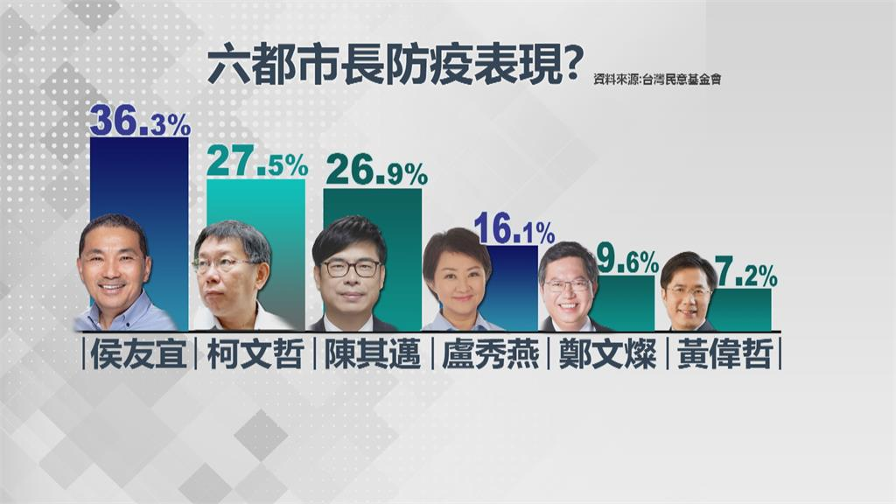
六都本土病例分佈 2022/05/26
疫苗注射
A7 重劃區 疫苗注射
社區疫苗注射站： A7無尾熊診所- 網路預約 - 莫德那疫苗需求踴躍. 每次領到疫苗都會優先發e-mail通知有留資料的預約民眾。
- 地址; 桃園市龜山區文學路259號
- 電話: (03) 327-8068
桃園市 疫苗注射
- COVID-19防治一網通 疫苗接種院所 地圖
- 桃園市政府 合約院所查詢
- 龜山區衛生所 社區疫苗接種站5月場次時間
疫苗免預約接種站
有關疫苗接種，桃市府規劃於5/26（四）、5/28（六）上、下午開設25處社區接種站，提供莫德納疫苗（18歲以上）、BNT疫苗（12歲以上）接種服務，特別提醒12歲至17歲青少年追加劑僅能施打BNT。目前學生以入校集中接種為原則，若欲前往接種站須有家長陪同；此外，60歲以上長者（50歲以上原民）可搭乘愛心計程車往返，完成接種可獲得700元超商禮券及桃園好米1包。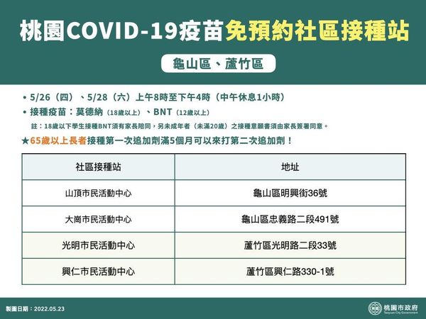
可事先下載並填寫 疫苗接種須知暨接種評估及意願書
第三劑疫苗的選擇
依據 新新聞 2022/05/02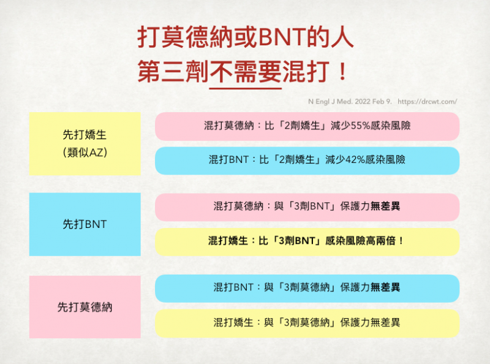
兒童疫苗注射
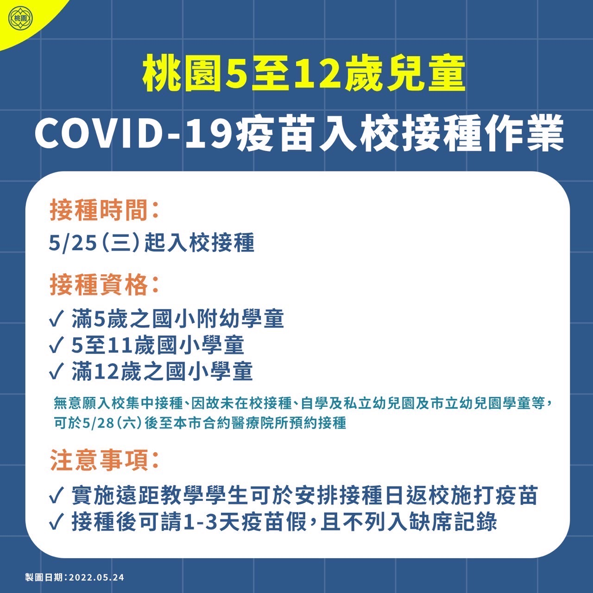
接種前 注意事項
5-11歲兒童即將開打輝瑞BNT疫苗，9個QA一次看- 接種時請攜帶健保卡
- 確認是否曾有接種不適反應
- 確認有無身體不舒服: 如發燒超過38度, 呼吸困難等
- 接種前一天提早休息且放鬆心情
- 接種當天不空腹並多喝水
接種後 注意事項
- 接種部位不搓揉
- 確實休息15分鐘並觀察是否不舒服
- 接種後如有發燒超過48小時請儘速就醫
- 接種後28天內留意有無胸痛, 心悸等情形: 如有類似情事就盡快就醫
- 多喝水多休息, 14天內不劇烈活動
PCR檢驗 及 快篩試劑
公費PCR 採檢 合約診所
COVID-19 全國指定社區採檢院所桃園 A7重劃區; A7無尾熊診所
- 網路預約
- 地址; 桃園市龜山區文學路259號
- 電話: (03) 327-8068
桃園 臨時採檢站
長幼三合一綠色通道- 華亞科技園區 檢測站 地點: 龜山區 科技三路88號 對面停車場
- 時間: 每週一至週五的上午9時至中午12時
- 採檢時間：採檢詢問專線03-3363270, 或參考下面貼圖
- 採檢費用：免費。
- 須帶物品：健保卡和身份證。
- 採檢方式：桃園統一使用RT-PCR、核酸檢測方式，需要 1~2 天。
- 採檢結果：手機下載健保快易通APP 即可隨時查詢
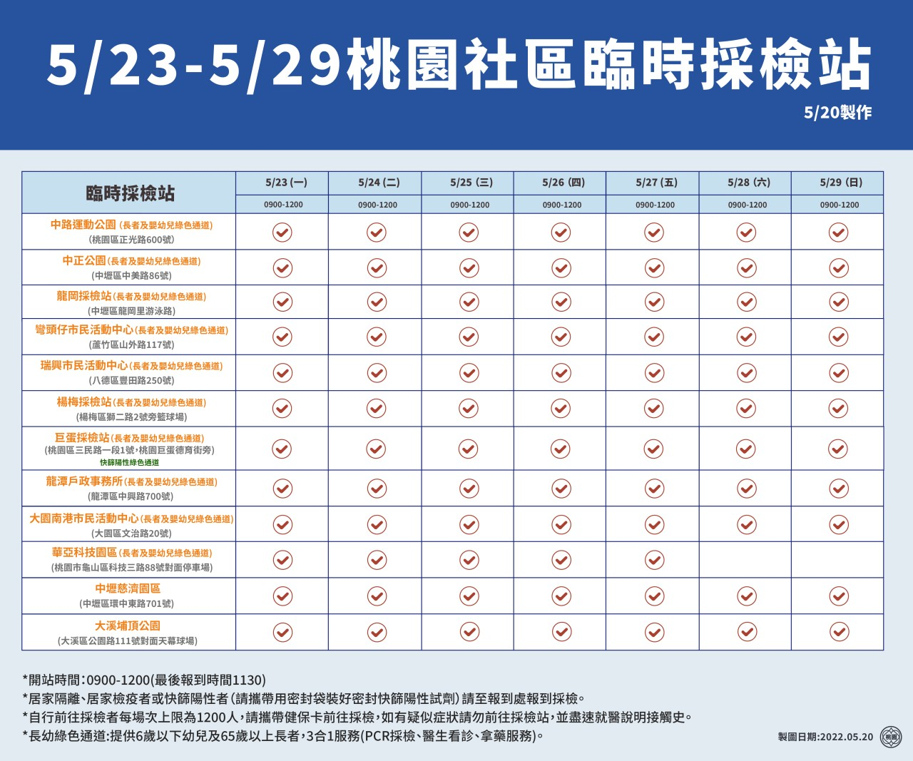
家用快篩試劑
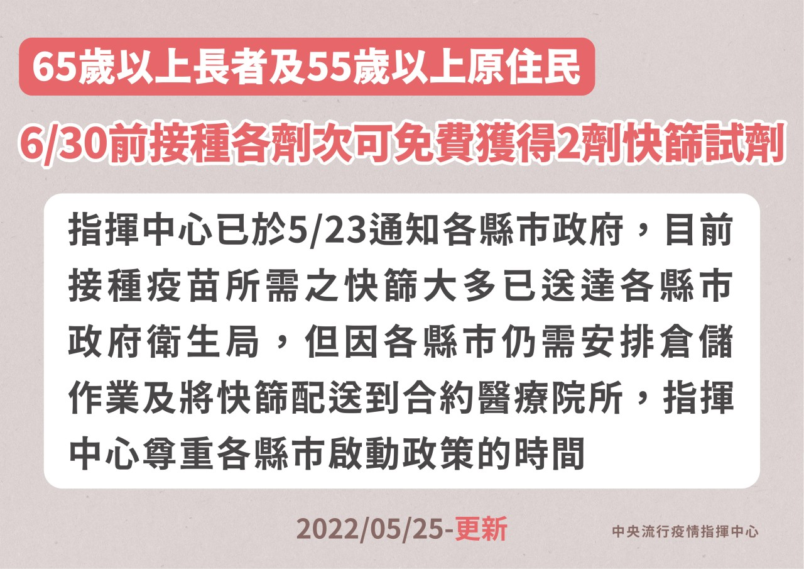
主要家用快篩試劑 包含核酸檢測, 抗原檢測及抗體檢測。 迅速找出疑似陽性個案阻斷感染源的快速初步篩檢是以抗原檢測為主。 抗原檢測的方式包含鼻腔快篩及唾液快篩兩種方式。
國內核准的家用快篩試劑 - 快篩試劑匯總
- PCR核酸檢驗：盧西拉、萊析樂
- 鼻腔抗原檢驗： 羅氏、英斯特、庫克比、快得利、欣大因特、亞培 、杏昌醫藥、伏麻西斯、百快、禾美司、銳偵、安心篩、賽特瑞恩、白可立、福樂、基因巴帝、捷保定、BD、富樂家、護瑪思、英諾千、集克、福爾威創、飛確 RV2、台塑生醫、凌越、速可安、長興、普生
- 唾液抗原檢驗：福吉美
- 家用快篩試劑可由醫療器材販賣業者、藥粧店（屈臣氏、康是美）、醫療器材行、便利商店（7-11、全家、OK、萊爾富）、藥局、超市賣場（家樂福、全聯、寶雅、愛買、美聯社）。
- 福吉美（唾液快篩試劑）販售店家：7-11、萊爾富、屈臣氏、康是美、杏一藥局、佑全藥局、丁丁藥局、大樹藥局、維康醫療用品等。
- 便利店 7-11 查詢: 快篩試劑、醫療型口罩、防疫用品、保健品各店家販賣情形, 點擊 防疫補給站
- 全家便利店 查詢: 開啟「FamilＭart APP」點選「地圖趣」，選擇「防疫新生活」專區即可快速檢閱各分店剩餘庫存。（每30分鐘更新1次）
- LINE SPOT 熱點 查詢, 搜尋欄輸入關鍵字「#公費快篩試劑發放地點」、「#COVID-19自費採檢指定院所」、「#居家快篩試劑販售地點」
快篩實名制
依據 天下雜誌, 家用快篩試劑實名制第一梯次於2022/4/28日上路，民眾可持健保卡購買。 第二梯次預計在2022/06月份 視情況啟動。- 販售模式：依循口罩實名制1.0於藥局通路販售模式。
- 販售地點：全國4,909家健保特約藥局+58個偏鄉衛生所。
- 購買份數：每輪每身分證字號僅能購買1次（可代購）。
- 販售價格：1人1份5劑，共500元（每劑100元，醫材原則售出，概不退換）。
-
分流機制：比照口罩實名制1.0初期，以身分證字號尾數單雙號進行分流：
- 單號：星期一、三、五
- 雙號：星期二、四、六
- 週日開放全民皆可購買
- 販售份數：至少5,000萬劑，1,000萬份。（每天預計提供200萬劑）
- 廠牌：羅氏（實名制快篩有「政府專用」標示）使用流程
- 快篩剩餘數量查詢／地圖： COVID-19實名制快篩試劑地圖 、 家用快篩熱度圖 、 台灣COVID-19快篩試劑地圖 。
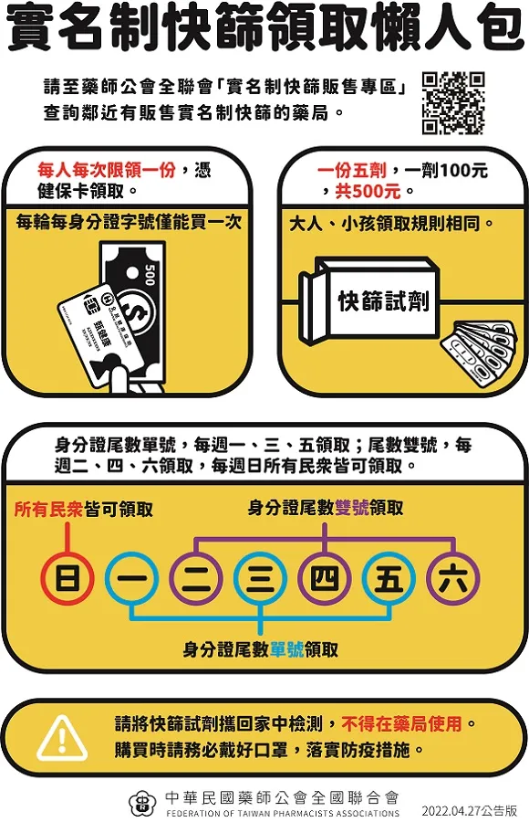
防疫門診 - A7重劃區版
桃園急救責任醫院
門診開設時段- 林口長庚醫院: 週一 ～ 週六 08:30 - 12:00, 13:30 - 16:30
- 桃園醫院: 週一 ～ 週五 08:00 - 12:00, 13:00 - 17:00, 18:00 - 23:00, 週六,日 08:00 - 12:00, 13:00 - 16:00
確診/快篩陽性視訊門診診
林口長庚醫院自2022年5月14日起，開立「COVID-19確診及家用快篩陽性視訊門診」-
適用對象:
- 於「居家隔離」、「自主防疫」、「居家檢疫」期間使用家用快篩陽性者之視訊確診評估。
- 「確診」者欲開立COVID-19相關藥物者，可由本人視訊看診，或可委由親友攜帶健保卡及確診證明直接至門診代為看診。
-
服務時段:
- 週一至週五之上下午時段。
- 兒科除上述時段外，亦增開週六上下午及週二、週三、週五之夜診時段。
- 本專診若經醫師評估可開立藥物，均可由親友代為領藥； 服務時段：週一至週五08:30-20:30，週六及國定假日8:00-16:00，例假日暫停。
- 網路掛號: 成人, 18歲以下兒童
- 長庚醫院 視訊門診操作說明, 安裝視訊會議插件 Cisco Webex Meeting
桃園通訊診療院所
西醫通訊診療- 微笑親子耳鼻喉科診所 , 桃園市龜山區文化二路51號, 03-3180-0202
- 德馨診所 一般科, 桃園市龜山區復興三路3-2號, 03-318-1458
- 樂誠診所 家醫科 桃園市龜山區文青二路13號1樓
- 無尾熊診所 一般科 桃園市龜山區文學路259號1樓、261號1樓, 03-327-8068
- 公費清冠一號動態查詢表
- 龜山文學風澤中醫診所 桃園市龜山區文學路255號1、2樓, 03-3270115
- 文青堂中醫診所 桃園市龜山區文青二路7號, 03-318-7018
- 悅兒親子中醫診所 桃園市龜山區文化一路10巷26號, 0928-803-334, 03-327-1368
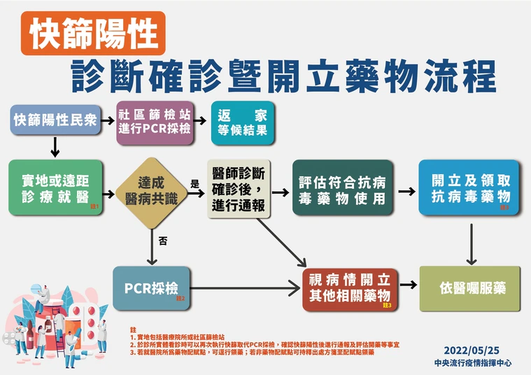
桃園長幼三合一綠色通道
2022/05/23日起將新增龜山華亞科技園區採檢站，提供6歲以下兒童及65歲以上長者採檢、醫生看診、拿藥的三合一服務。- 時間: 每週一至週五的上午9時至中午12時
- 地點: 龜山區 科技三路88號 對面停車場
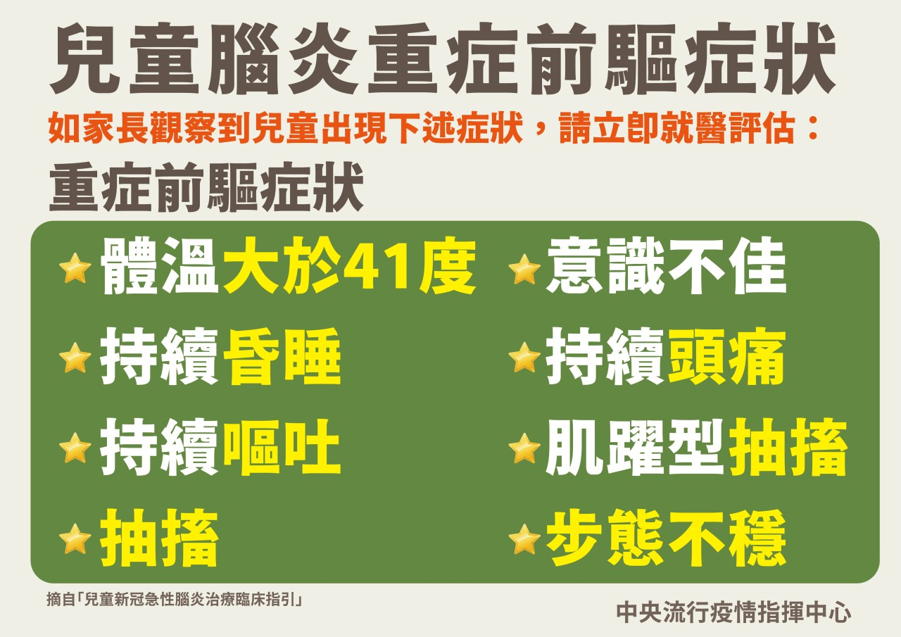
學齡前兒童就醫綠色通道
林口長庚醫院：2022/05/17日起 開立「學齡前兒童就醫綠色通道」採門、急診雙通道，由兒科專科醫師看診，優先提供學齡前兒童相關評估, 採檢與診療服務。- 適用對象：學齡前兒童(6歲以下)。
-
門診
- 星期一到六上下午之兒童感染科或胸腔科門診。 優先看診評估，如果確認需篩檢，安排至兒童急診户外篩檢站篩檢。
- 門診網路掛號
- 快篩陽性學齡前兒童請至急診綠色通道；確診學齡前兒童請採視訊或由家人代看診。
- 兒科急診：24小時，提供快篩陽性學齡前兒童，及無門診時段之服務。
抗病毒藥物
HEHO 2022/05/20 確診後有哪些藥物可以治療？- 輝瑞（Pfizer）公司隨後宣佈自己的新冠口服藥帕克斯洛維德（Paxlovid） 藥物機轉：抑制病毒複製過程中所需 3CL ，主要作用在病毒的「蛋白酶」 治療成效：降低感染後的 85-89 %住院、死亡風險 療程時間：每天服藥兩次，五天為一次療程, 可家人代為領藥或視訊看診藥師配送。
- 美國默克（Merck，又稱默沙東，MSD）公司生產的新冠口服膠囊莫納皮拉韋（Molnupiravir） 藥物機轉：抑制病毒複製過程中所需 3CL ，主要作用在病毒的「蛋白酶」 治療成效：降低感染後的 85-89 %住院、死亡風險 療程時間：每天服藥兩次，五天為一次療程, 由長照機構,洗腎診所發放。
- 瑞德西韋 Remdesivir 需要在醫院內靜脈注射，一般情況下難以普及使用，研究發現使用在前期症狀開始治療，效果會更好， 5 天的療程跟 10 天的療程看起來差不多，目前以 5 天療程為主。 住院患者使用。
- 清冠一號 藥物機轉：抑制病毒與 ACE2 結合，阻止病毒入侵細胞，也能抑制 3CL 蛋白酶活性，阻斷病毒在細胞內的複製。 療程時間：從10 天縮短為 5 天，前 3 天用足標準劑量，由中醫師開立處方取得。
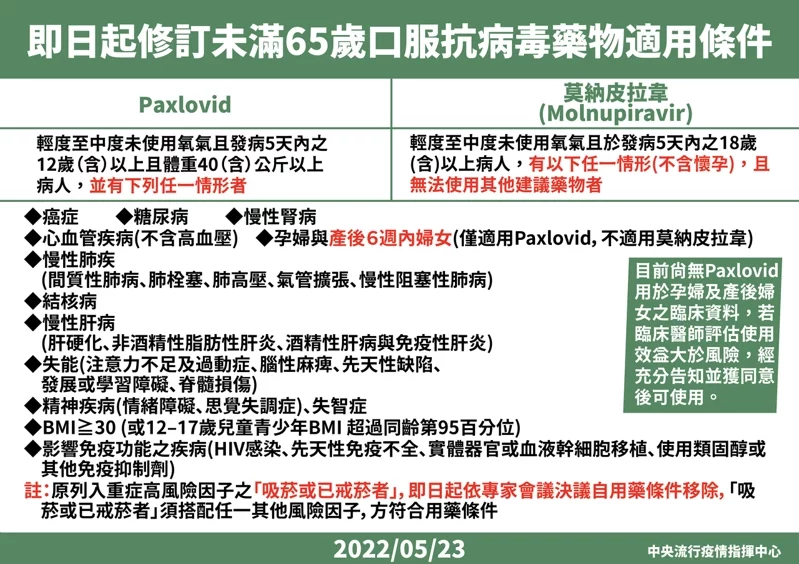
防疫隔離的各項作業整理
請點擊各項目, 閱覽說明
輕症或無症狀確診者，若未滿69歲，非65-69歲獨居者，無血液透析、懷孕、洗腎等情形，且環境條件能滿足確診者1室、同戶未確診者小於4人，可採
居家照護 ，期滿後繼續進行自主健康管理。
- 管理期間：7天居家照護＋7天自主健康管理
- 解隔條件：符合「無症狀或症狀緩解」且「距發病日或採檢日滿7天」，不需快篩即可外出
- 篩檢次數：1次，僅PCR檢測確診時（第0天）
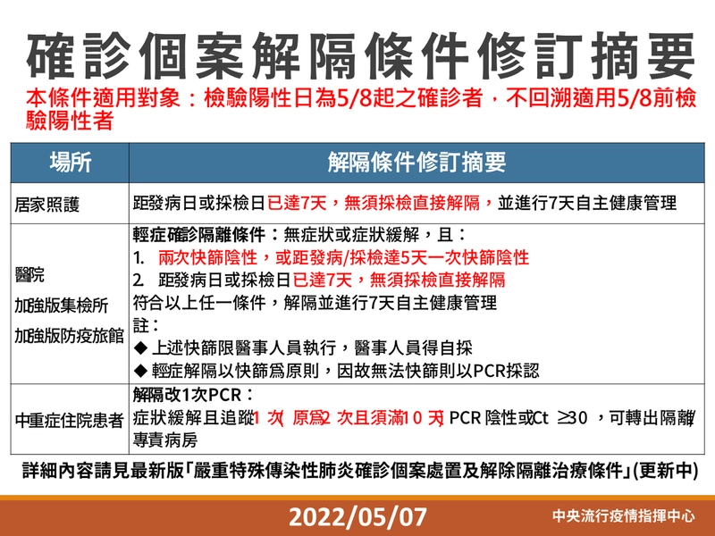
若為確診者同住家人，且以打滿三劑疫苗，得免居隔+7天 自主防疫，兩天內快篩陰性可上班、出門採買，須避免至人潮擁擠處及聚餐。
未打滿三劑疫苗，須3天居家隔離 加4天自主防疫 ，隔離期間應留在家中，禁止外出；自主防疫期間，如需外出工作及採買生活必需品，需有2日內家用抗原快篩陰性證明。
國、高中生維持7天待在家。
未打滿三劑疫苗，須3天居家隔離 加4天自主防疫 ，隔離期間應留在家中，禁止外出；自主防疫期間，如需外出工作及採買生活必需品，需有2日內家用抗原快篩陰性證明。
國、高中生維持7天待在家。
- 管理期間：打滿三劑：0+7、未打滿三劑：3+4
- 解隔條件：期滿即解隔
- 篩檢次數：最多1+4次。匡列時快篩，自主防疫期間如要外出，當日需快篩陰性
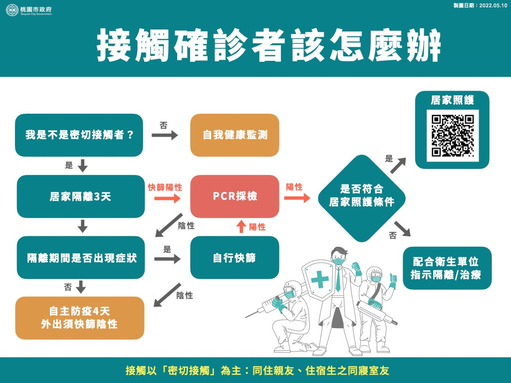
自國外入境者，從入境隔日起算（入境日為第0天），需居家檢疫
7天，第8天起接續自主健康管理
7天，住所以1人1戶為原則，若環境條件無法配合者須入住防疫旅宿。
- 管理期間：7天居家檢疫＋7天自主健康管理
- 解隔條件：居家檢疫期滿當日（第7天）快篩陰性
- 篩檢次數：2次，入境時進行PCR檢測，居家檢疫期滿進行快篩
進行自我健康監測
，期間避免外出用餐、聚會，或出入人潮擁擠、近距離群聚等場所，待密切接觸者篩檢結果出爐，如果陽性則成密切接觸者進行居家隔離，陰性即可解除監測。
桃園居家照護作業
- 居家照護對象：桃園市已啟動COVID-19輕症居家照護計畫，民眾收到確診通知後，桃園市府衛生局便將立即進行個案調查、評估照護模式，只要是無症狀、65歲以下、未懷孕、不需進行血液透析、同住家人4人以下，即符合輕症居家照護條件。
- 醫療服務: 衛生局與轄內11家急救責任醫院合作，劃分通訊診療區域，將桃園13個行政區分為「山、海、南、北」4大區域。 個案通報後，市府將啟動個案調查與評估，如符合輕症居家照護條件，便將由負責該區的責任醫院主動電訪個案，關懷居家照護者，透過雙向互動方式，即時關懷民眾建康。桃園也推出「加強版兒童居家照護」，每天都有兒科通訊診療門診，加上林口長庚醫院、衛福部桃園醫院、國軍桃園總醫院提供24小時兒科急診服務。
- 藥品配送: 醫師看診開立處方箋後，民眾可透過紙本或電子處方箋，由醫療院所或特約藥局藥師送藥到宅，也可請親友至原看診的特約醫療院所繳費及領藥；
- 急難紓困: 由社會局提供相關服務，居家照護個案若於桃園市居隔導致生活陷困，且為負擔家庭主要生計者，可於隔離結束日起3個月內，持隔離通知書，至隔離結束地之區公所辦理急難紓困，如有相關需求，可洽詢社會局社會救助科（03-3347368、03-3311587）；另外，如居家照護個案確實完成隔離，且隔離期間無違規情形且未支領薪資者，可另線上申辦每人每日1,000元的防疫補償金。在幼兒托育服務方面，如有相關需求，可洽社會局兒童托育科（電話：03-3347368、3390702）。
- 教育學習: 為讓孩子線上自主學習不間斷，教育局提供學生關懷與線上學習服務，每週透過電話、通訊軟體等方式聯繫關懷學生，減輕其心理壓力，若學生明顯有生活適應問題，可向學校輔導室提出諮詢需求。另外，學生於停課期間改採線上同步方式學習，也可利用桃園智學吧、桃園市國中英語學習網、學習吧-桃園專區、ewant育網開放教育平台-桃園專區、教育部教育雲、教育部因才網、教育部CoolEnglish、均一教育平台、PaGamO等非同步線上學習資源平台，讓孩子自主學習不打烊。
- 輕症確診者關懷中心: 提供生活關懷服務，包括發送防疫關懷包、垃圾清運、寵物照顧、防疫旅館、外送平台訂餐資訊、繳費資訊等；居家照護期間如有移動需求，可撥打「輕症確診者關懷中心」專線，安排防疫計程車接送。
- 垃圾處理原則：請參考桃園市 居家隔離或居家檢疫者垃圾排出注意事項 - 共體時艱,將這段期間的垃圾,儘量 妥善收集並暫時貯存於家中,待此期間結束未確診後,再排出垃圾。 違反居家隔離或居家檢疫規定逕自外出丟垃圾者,將依「傳染病防治法」處罰鍰新臺幣10萬元至100萬元。
防疫旅館推薦
桃園市居家照護
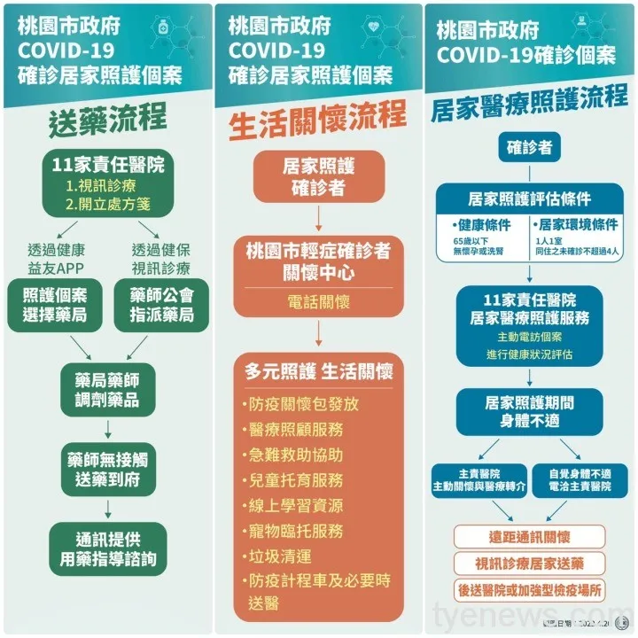
桃園市防疫關懷包快易通
桃市府推動「防疫關懷包快易通」服務，並提供「雙軌制」發放方式供本市市民選擇，除了可透過「桃園市民卡」LINE官方帳號預先登記後領取，確診者也可委託非同住親友擔任代領人，攜帶確診者的身分證及PCR陽性截圖證明，直接至各區公所領取防疫關懷包。防疫關懷包內含5劑快篩試劑、生活物資及服務手冊。為了照顧居住在桃園的確診者，只要能由區公所或里辦公室證明有居住事實，非桃園籍的確診居隔者一樣可以領取桃園防疫關懷包。
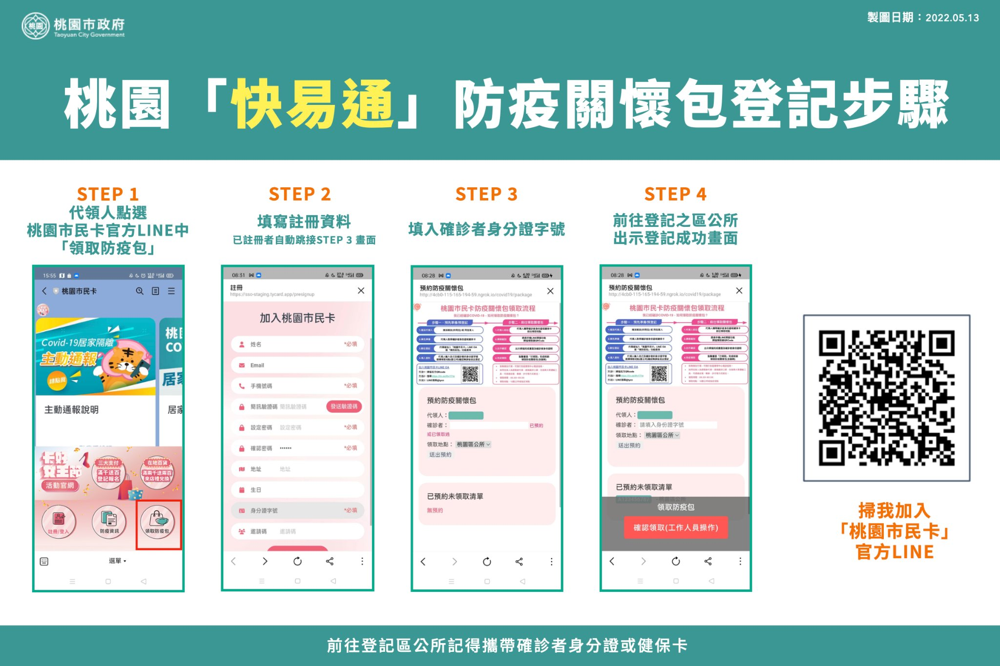
請假 / 補償 / 保險
確診者/密切接觸者 隔離請假規定及證明
- 確診者在7天隔離期間，可請普通傷病假並領半薪。
- 密切接觸者及照顧無法自理之受隔離家屬者，在3天居家隔離期間可請防疫隔離假，後續4天自主防疫期間，可評估個人或家屬健康狀況再行請假。
- 經勞動部公告請假可利用 #健保快易通APP 或 #數位新冠病毒健康證明 之PCR陽性採檢結果作為證明，如雇主仍要求須提供隔離通知書作為證明者，可於最後請假日隔天起算30日內，補提隔離通知書。
- 而5/20（五）前尚未收到隔離通知書的市民朋友也不用擔心，在6/19（日）前都可進行補提，中央流行指揮中心也將在5/25（三）「數位新冠病毒健康證明」平台增加「接觸者隔離證明」功能，提供證明書下載！
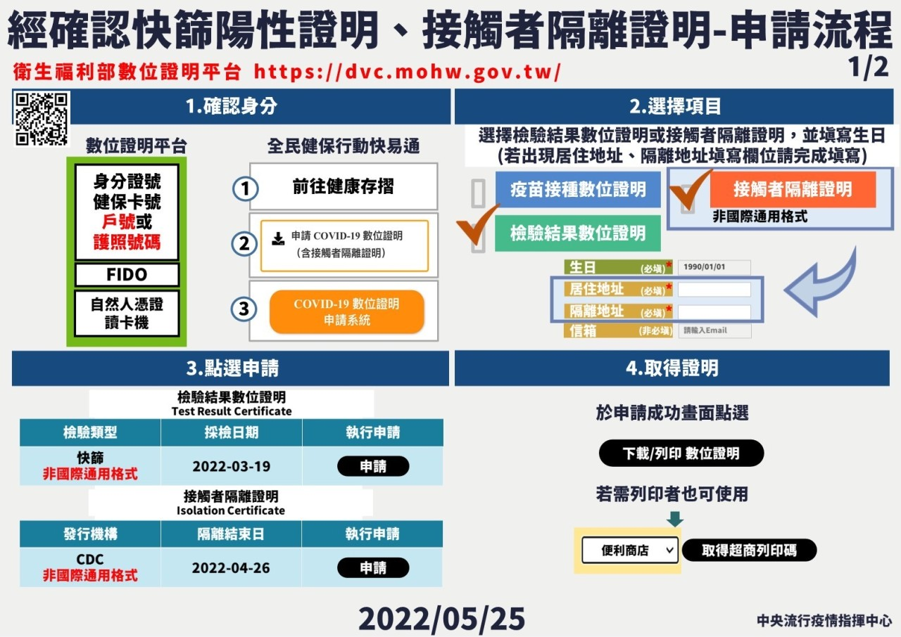
如何獲得確診者居隔通知書
 掃描/點擊 左邊 QR Code 或 使用LINE 搜索 @tycc, 就能加入 "桃園市民卡" 官方帳號 群組。
加入桃園市民卡官方LINE，除了可登記領取防疫關懷包外，即日起新增下載接觸者居家隔離通知書功能！
掃描/點擊 左邊 QR Code 或 使用LINE 搜索 @tycc, 就能加入 "桃園市民卡" 官方帳號 群組。
加入桃園市民卡官方LINE，除了可登記領取防疫關懷包外，即日起新增下載接觸者居家隔離通知書功能！線上 申請居家隔離通知書
5/8（日）後因同住家人確診而受匡列的市民朋友，經確診者填寫密切接觸者（即同住家人）資訊後，即可至桃園市民卡官方LINE，輸入居家隔離者身分證字號、出生年月日，經查詢確認個人資料已於系統中，則可進入居隔書申請頁面，請市民朋友注意正確填寫個人手機號碼、地址，如透過代領人申請，另須填寫代領人身分證字號及手機號碼，資料確認送出後，即可下載居家隔離通知書。
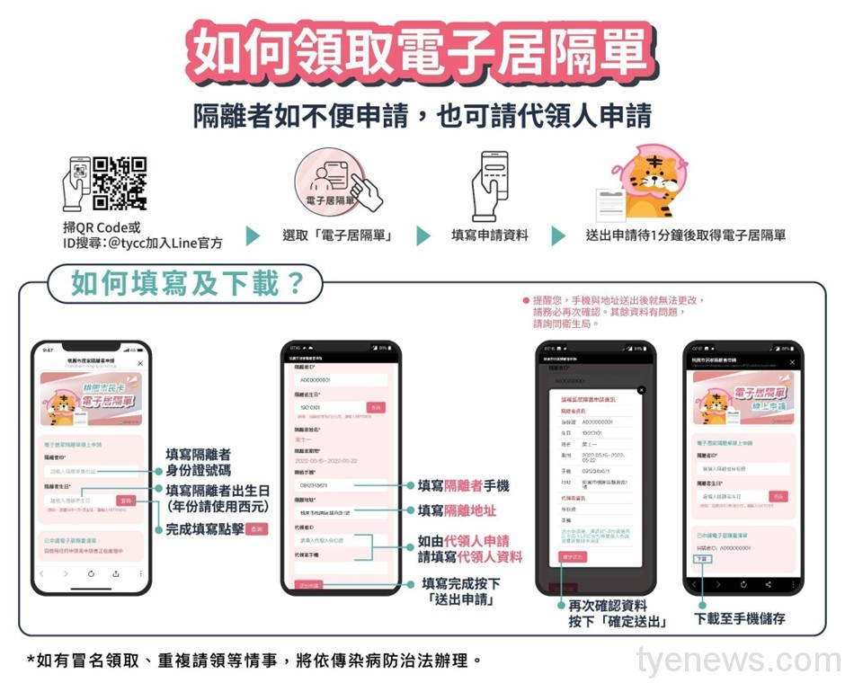
其他方式包含:
- 收到簡訊填報「 COVID-19 確診個案自主回報系統 」，主動回報同住親友密切接觸者資料。
- 若確診未收到簡訊者，可由 健保快易通 導向「COVID-19 確診個案自主回報系統」，主動 回報相關資料。
- 「COVID-19 確診個案自主回報系統」可掃下方或點擊 QR_Code 填寫。
- 備註: 此份表單提交後，若有錯誤需修改，您可再點選報網址修改，僅有 1 次修改機會，且必須於填報 24 小時內執行修改，若超過填報 24 小時時限，系統將自動關閉權限無法再修改，請您於送出資料前謹慎確認手機等資料正確性。
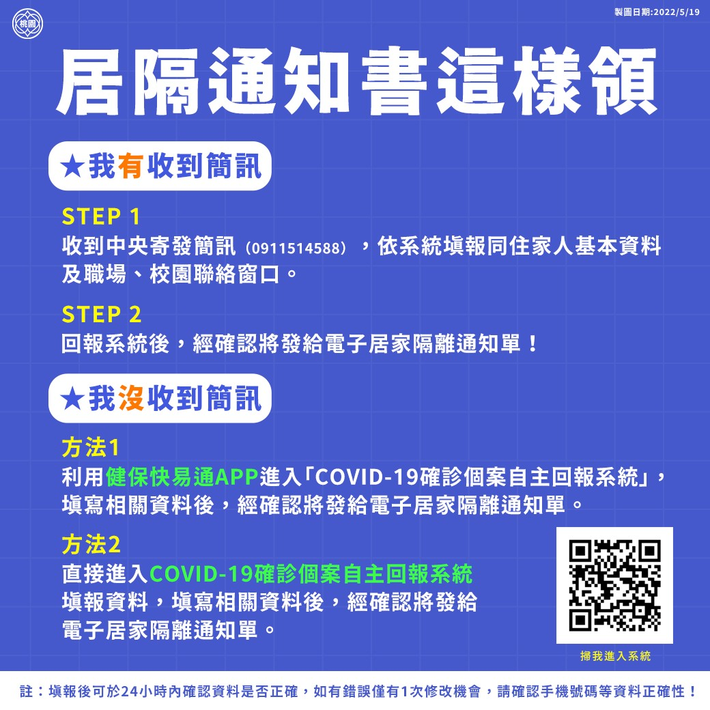
數位新冠病毒健康證明
- 中央流行疫情指揮中心今(9)日表示，為因應民眾反應，我國「數位新冠病毒健康證明」系統將增加顯示身分證字號資料之需求，並於今(2022)年5月10日上午8時完成版本更新。
- 有關數位新冠病毒健康證明申請，係以電腦或手機直接 上網辦理，執行三個步驟即可取得：
- 確認身分。
- 選擇項目：選擇「疫苗接種數位證明」、「檢驗結果數位證明」。
- 取得證明：於申請成功畫面點選「下載/列印 數位證明」，若需列印者也可使用「取得超商列印碼」。
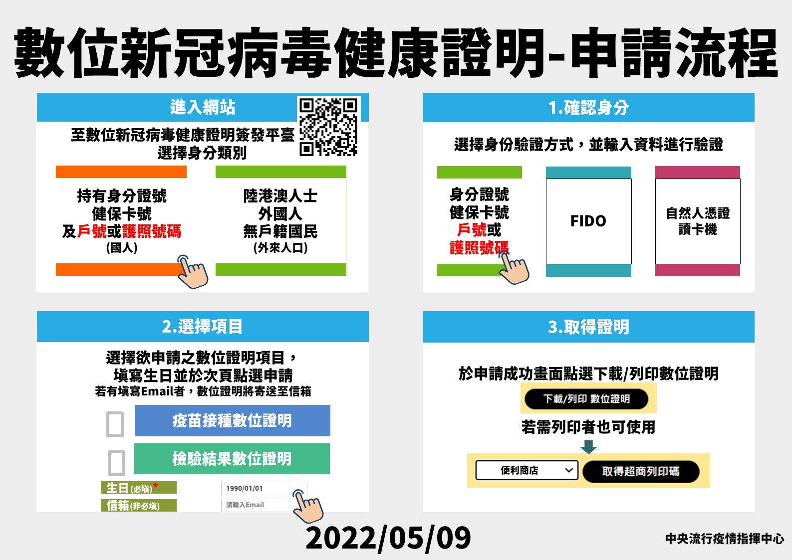
相關資訊
- 自由時報 2022/05/23 蘇大成： - 得了COVID-19新冠病毒輕症或無症狀該怎麼辦?
- 康健雜誌 2022/05/20 防止病毒入侵！ - 9大好食物 增強你的免疫力、補足關鍵營養素
- HEHO 2022/05/13 防疫生活對策 - 居家防疫怎麼做？ 長庚毒物團隊教「日常10招」自我保護
- 康健雜誌 2021/05/12 新冠肺炎症狀 和感冒怎麼區分？ - 11大新冠肺炎症狀一次看，潛伏期也不同
- 新北市政府 居家照護生活攻略
確診者作業流程
快篩陽性怎麼辦？ 依據 中央通訊社 2022/05/25資訊： 快篩陽性即確診5/26起全民適用 須經醫師診療確認步驟1. 進行確診通報 作業
可以遠距／視訊診療醫師協助評估確認快篩陽性結果，如快篩陽性者及醫師對評估陽性結果達成共識，則由此醫師所屬醫事機構進行通報，並由系統自動研判為確診個案。快篩陽性者或評估醫師，如對於快篩陽性結果未有共識或有疑義，仍可通知衛生局安排PCR採檢。
請參考 防疫門診 的說明進行視訊門診，或利用桃園長幼三合一綠色通道 進行採檢、醫生看診、拿藥的三合一服務。
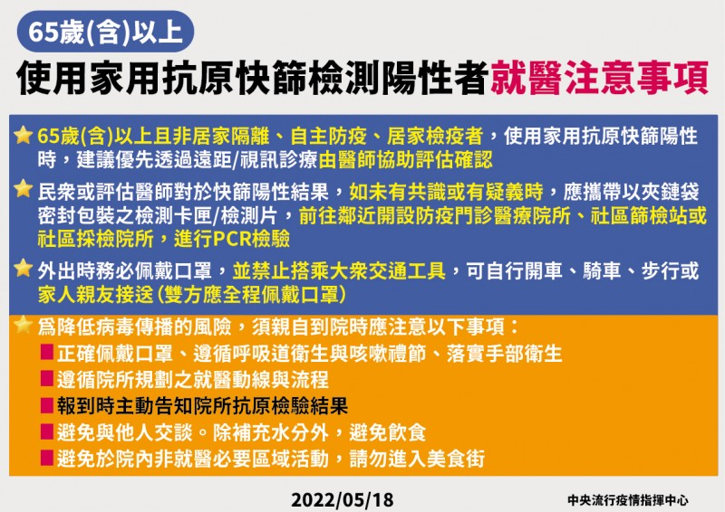
步驟2. 聯繫接觸者
請主動通知發病前兩天的密切接觸者，主動 填寫疫調單。 疫調單填寫教學
步驟3. 回報疫調
若收到政府疫調網址則直接透過連結填寫。尚未收到者可上健保快易通，APP裡點選「 健康存摺 」-「 COVID-19確診個案自主回報系統 」填寫。若有修改需求，請於初次填報24小時內進原連結編輯一次。
步驟4. 居家照護 7+7
前7天為「居家照護的居家隔離」、後7天為「居家照護的自主健康管理」。
請主動通知發病前兩天的密切接觸者，主動 填寫疫調單。 疫調單填寫教學
步驟3. 回報疫調
若收到政府疫調網址則直接透過連結填寫。尚未收到者可上健保快易通，APP裡點選「 健康存摺 」-「 COVID-19確診個案自主回報系統 」填寫。若有修改需求，請於初次填報24小時內進原連結編輯一次。
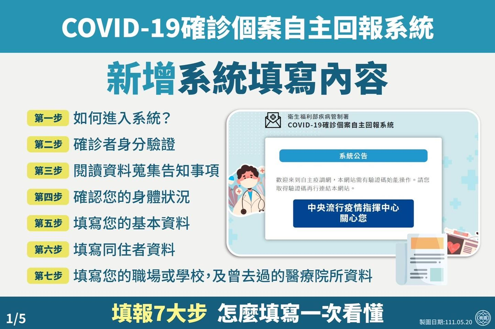
步驟4. 居家照護 7+7
前7天為「居家照護的居家隔離」、後7天為「居家照護的自主健康管理」。